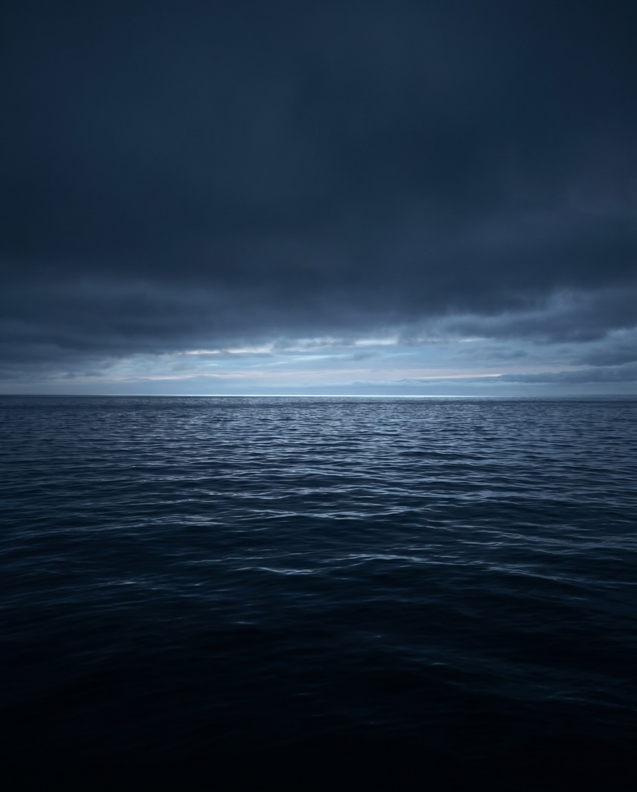
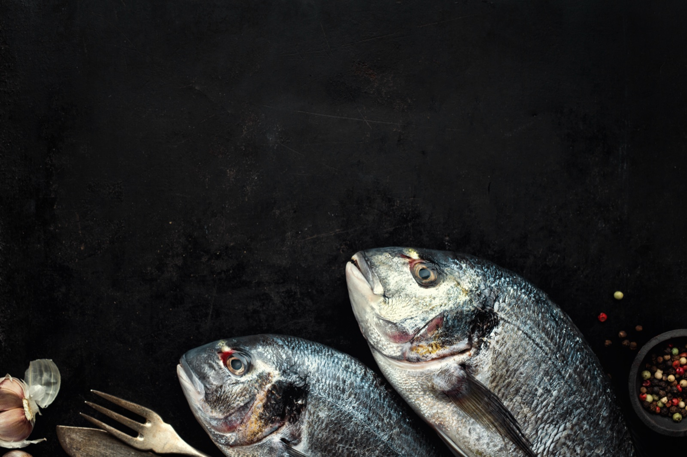
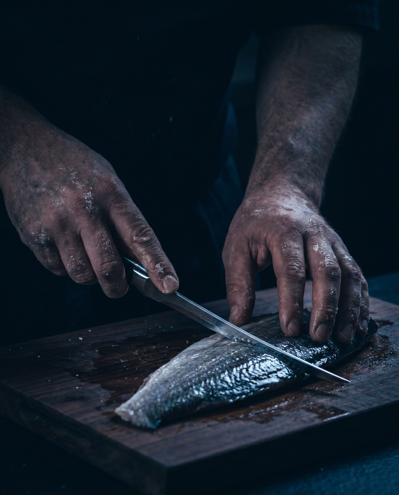
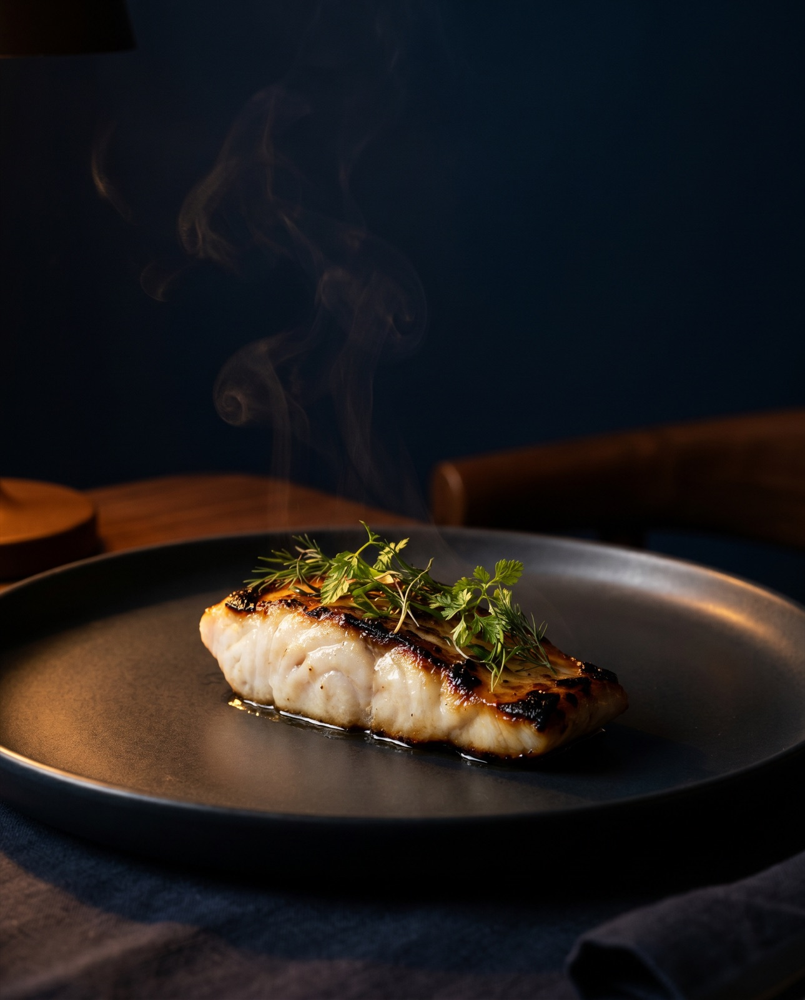

frutos do mar · por reserva
Vinte anos.
As mesmas mãos.
Uma casa de frutos do mar em Porto Alegre — só por reserva. O mar muda. Quem cozinha, não.
desça
01
O mar muda.
Tudo começa nele — e na constância de quem o lê todo dia.

02
O que o mar deu hoje.
Sem cardápio. Só o que chegou fresco, escolhido no mesmo dia.

03
As mesmas mãos.
O ofício, não a pessoa. Vinte anos no mesmo gesto.

04
O ponto certo.
Pouca interferência. O peixe, o fogo, o tempo — nada mais.
05
Fogo e tempo.
A garrafa certa pra cada prato. Você diz o que gosta; a casa resolve.
Você reserva.
O resto é com a casa.
Poucas mesas, sempre as mesmas mãos. O cardápio você descobre na hora.
Solicitar reserva→por solicitação · resposta em até 48 h